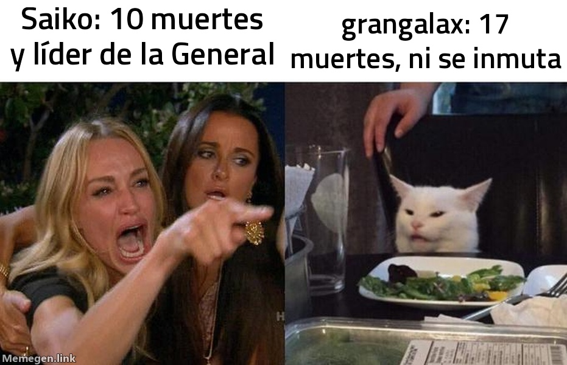

Atestado de la segunda Flex: cinco detenidos y ningún testigo con ganas de hablar
La plantilla titular del Rincón del Viciado entra en la Grieta a las 20:31 y sale con 55 muertes encima.

PARTE DE LA COMISARÍA DE PILTOVER · 20:31
HECHOS. Cinco miembros del Rincón del Viciado, plantilla titular de la ACE League, entran a jugar una Flex. A los veintisiete minutos salen con 55 muertes y 25 asesinatos que no compensan nada: una muerte cada medio minuto, de media.
DETENIDOS. grangalax, con Ekko, diecisiete muertes y ninguna prisa. TheTrevur, con Malphite, diez, tres de ellas en el mismo sitio, y un Pantheon rival que le sacó la calle entera. Wôlf, con Nidalee, diez, y un Fiddlesticks enfrente que acabó con dos muertes en toda la tarde. Saiko, con Blitzcrank, diez, cuatro en el mismo sitio y once guardianes puestos para que nadie dijera que no ayudó. RDV Canyon, con Sivir, se libra por los pelos: 9/8/2, pero con el 27,4 % del daño, que en esta banda cuenta como honradez.
OBSERVACIONES. El comisario Cobretuerca visitó la escena y dictaminó que «a esto le falta un culpable». Un agente le oyó murmurar, ya en el coche, que el martes le pasó lo mismo con su otra cuenta, y se negó a precisar cuál.
Si esta es la plantilla titular, la ACE League debería haber pedido el parte antes de aceptar la inscripción.